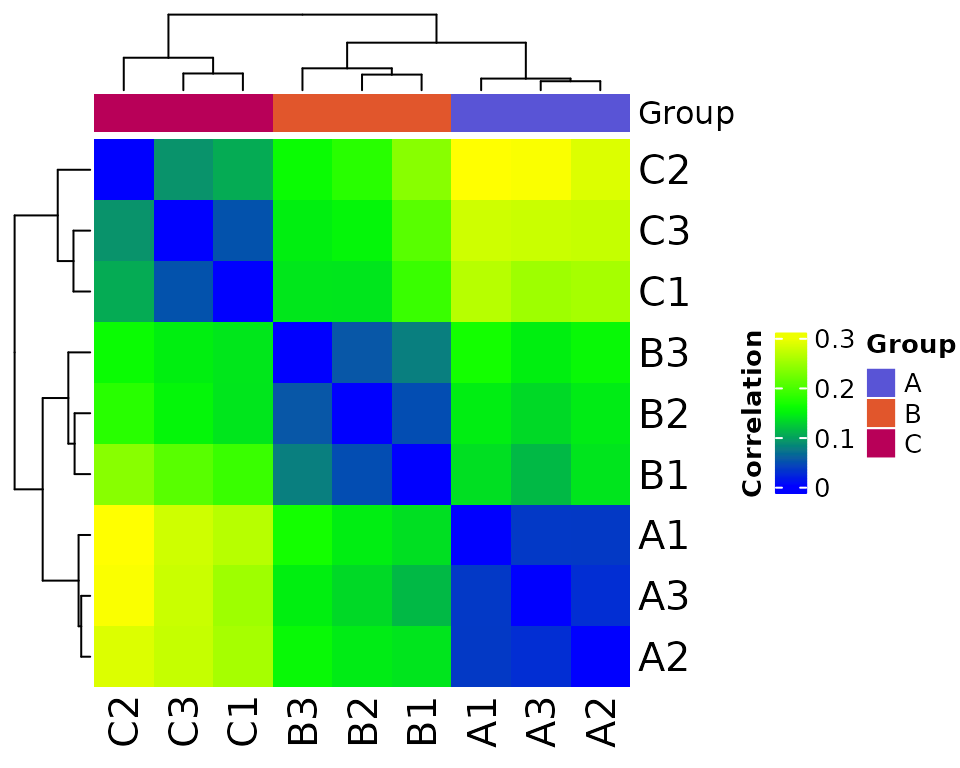
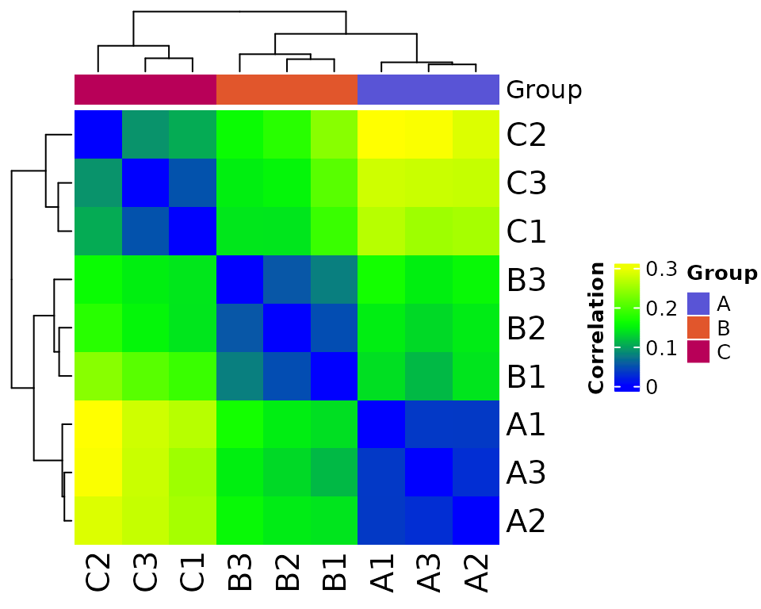
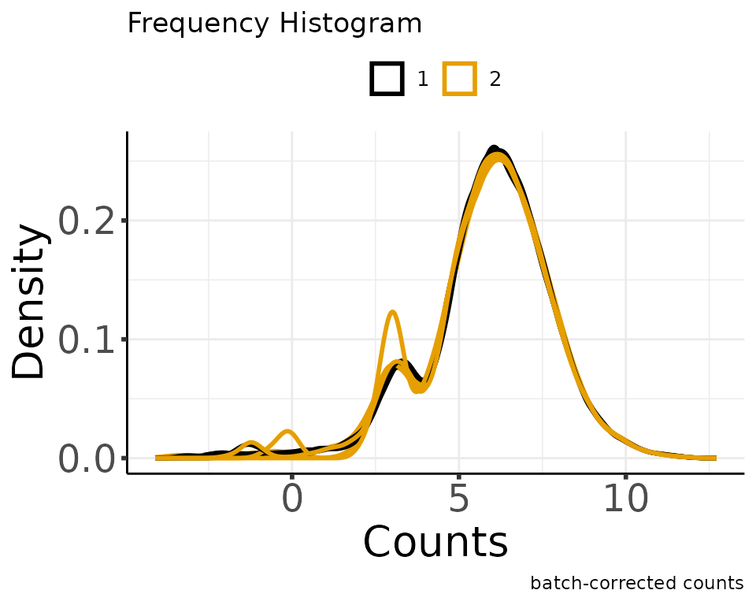
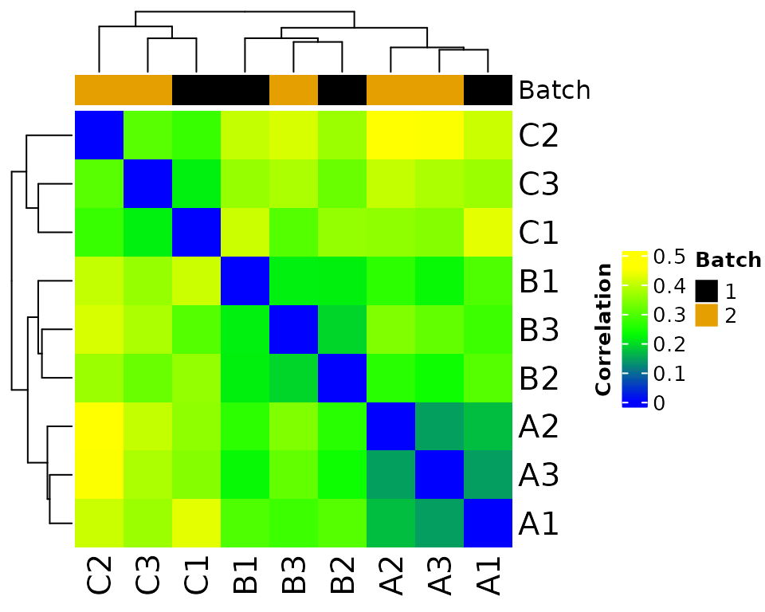
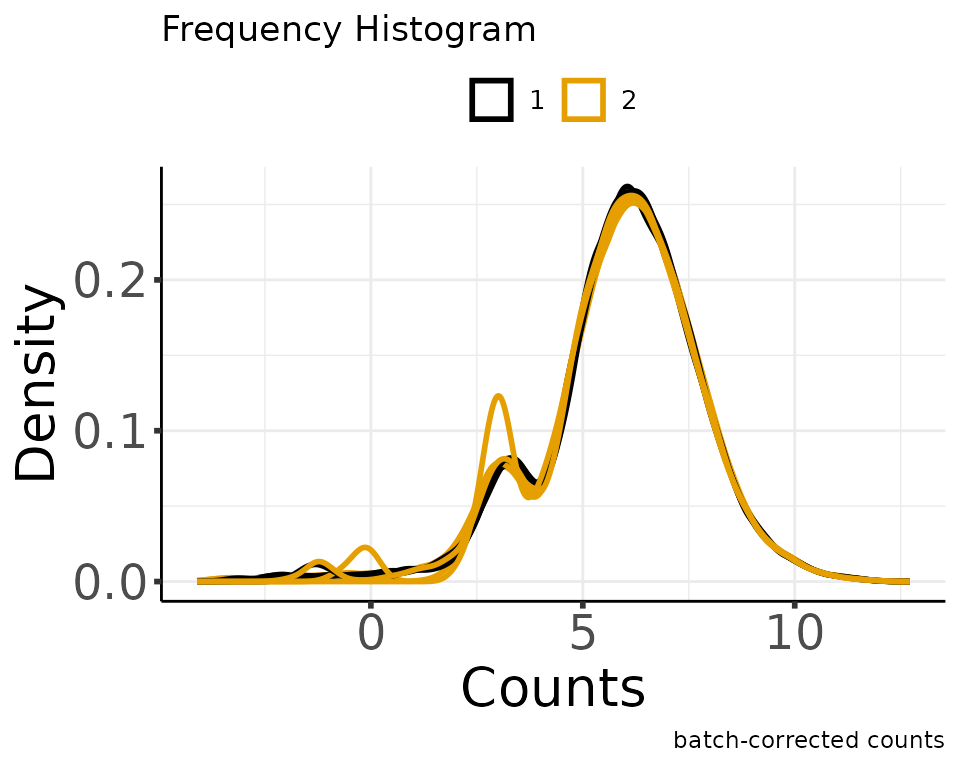
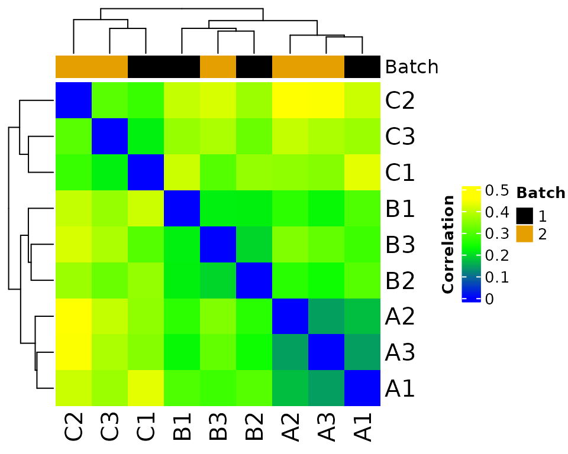

library(MOSuite)
#> Warning: replacing previous import 'S4Arrays::makeNindexFromArrayViewport' by
#> 'DelayedArray::makeNindexFromArrayViewport' when loading 'SummarizedExperiment'Default plots from each step
clean
moo <- create_multiOmicDataSet_from_dataframes(
sample_metadata = as.data.frame(nidap_sample_metadata),
counts_dat = as.data.frame(nidap_raw_counts)
) %>%
clean_raw_counts(print_plots = TRUE)
#> * cleaning raw counts
#> Not able to identify multiple id's in GeneName
#> Columns that can be used to aggregate gene information GeneName
#> Aggregating the counts for the same ID in different chromosome locations.
#> Column used to Aggregate duplicate IDs: GeneName
#> Number of rows before Collapse: 43280
#> no duplicated IDs in GeneName
moo %<>%
filter_counts(group_colname = "Group", print_plots = TRUE)
#> Number of features after filtering: 7943
#> Warning: ggrepel: 1 unlabeled data points (too many overlaps). Consider
#> increasing max.overlaps

normalize
moo %<>%
normalize_counts(group_colname = "Group", print_plots = TRUE)
#> Total number of features included: 7943
#> Warning: ggrepel: 3 unlabeled data points (too many overlaps). Consider
#> increasing max.overlaps
 

#> Sample columns: A1, Sample columns: A2, Sample columns: A3, Sample columns: B1, Sample columns: B2, Sample columns: B3, Sample columns: C1, Sample columns: C2, Sample columns: C3batch correct
moo %<>% batch_correct_counts(
covariates_colname = "Group",
batch_colname = "Batch",
label_colname = "Label",
print_plots = TRUE
)
#> Found2batches
#> Adjusting for2covariate(s) or covariate level(s)
#> Standardizing Data across genes
#> Fitting L/S model and finding priors
#> Finding parametric adjustments
#> Adjusting the Data 

#> The total number of features in output: 7943
#> Number of samples after batch correction: 10Customize plots
TODO - show how to use individual plotting functions - how to customize & override default color palettes - how to customize ggplot objects
3D PCA
plot_pca_3d(moo@counts$batch,
moo@sample_meta,
group_colname = "Group",
label_colname = "Label",
color_values = moo@analyses[["colors"]][["Group"]]
)Expression Heatmap
p <- plot_expr_heatmap(moo, count_type = "norm", sub_count_type = "voom")
#> Warning: `arrange_()` was deprecated in dplyr 0.7.0.
#> ℹ Please use `arrange()` instead.
#> ℹ See vignette('programming') for more help
#> ℹ The deprecated feature was likely used in the MOSuite package.
#> Please report the issue at <https://github.com/CCBR/MOSuite/issues>.
#> This warning is displayed once every 8 hours.
#> Call `lifecycle::last_lifecycle_warnings()` to see where this warning was
#> generated.
#> [1] "The total number of genes in heatmap: 500"
#> Warning: The input is a data frame, convert it to the matrix.
#> Warning: argument `height` is not supported in pheatmap -> Heatmap translation,
#> skip it.
print(p)